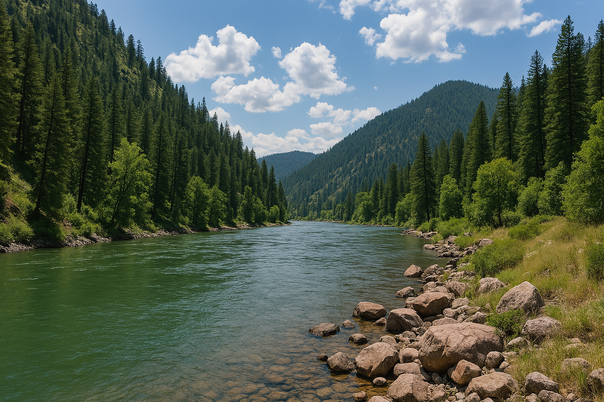
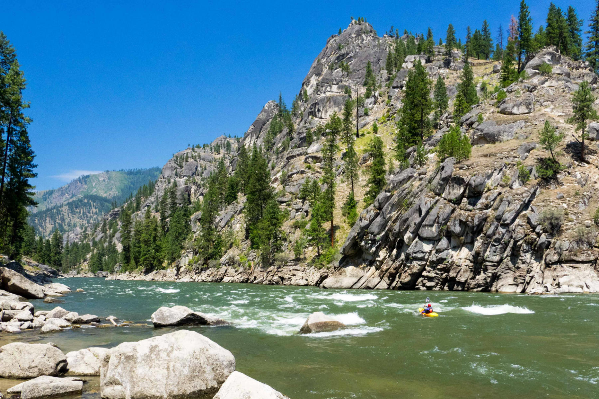
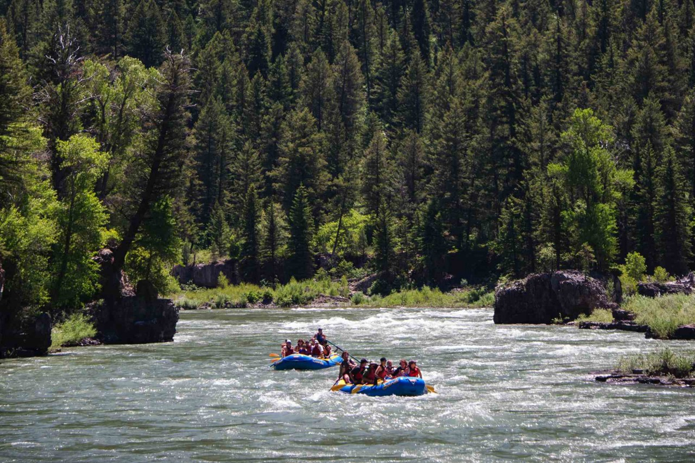

Our Rivers
Salmon River
Known as the “River of No Return,” the Salmon River offers thrilling rapids, deep canyon walls, and unforgettable scenery. This river is perfect for both beginners and experienced rafters looking for adventure.

Snake River
The Snake River winds through dramatic landscapes and offers a mix of calm stretches and exciting whitewater. Wildlife sightings are common, making it a favorite for families and nature lovers.
